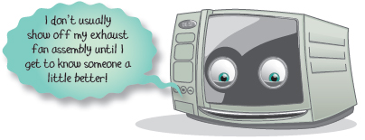

“The real secret to microwave magic is in our parts. Looking at a microwave oven we begin with the tube which creates the radio waves, we call this the magnetron tube. The magnetron tube needs about 4,000 volts to operate, so we need to increase the voltage that comes out of your wall outlet, which is only 110 volts. To increase the voltage we use a high voltage transformer, a capacitor and a diode. The high voltage transformer will produce 2,000 volts, but we still need twice the power. The capacitor is incorporated into the circuit in order to double the voltage to 4,000 volts and store the first 2,000 until the additional 2,000 volts are produced. The diode is in-line with the capacitor and because it is designed to allow electricity to flow only in one direction, prevents the store of energy in the capacitor from escaping. We now have the 4,000 volts needed to power the magnetron. So to review, first we transform 110 volts into 4,000 volts with the use of the high voltage transformer, capacitor and diode. The 4,000 volts go into the magnetron where it is converted into electromagnetic cooking energy, or microwave energy, used to cook the food.
“Now all we have to do is control the radio transmitter, and we do this in three ways. First of all, we have a system of at least two door switches called interlock switches to stop the power in case you ever got the door open while the microwave was running. This is MUCH more complicated than a door switch in say, a dryer—they‘re all just full of hot air anyway!”
“The interlock switches turn the magnetron off if the door is opened, but while the door is closed, the strength of the waves and how long to cook for must also be controlled. Just like regular electric ovens turn power on and off to the bake element to keep the heat inside the cavity consistent, a microwave oven does the same. For the longest time, magnetrons were either on or off, with no high or low power adjustment, which explains why my father had such an all-or-nothing attitude about everything! However with the newer microwaves, like myself, we actually have power levels that can be set before you begin cooking your food. The part that controls this on and off cycle, and tells us how long to cook the food is called the power control board. On older models, like my parents and grand parents, this was done with two parts, a timer and a power control switch.”
“The other thing we need to do to control the radio waves and cook better is to stir up the waves from the magnetron, and move them all around the inside of the oven cavity. Can you guess the name of the part that stirs up the microwaves? That‘s right, it‘s called the stirrer, which consists of a metal fan blade and a little motor, and years ago they used a tiny belt between them to slowly keep the stirrer turning. Many of us microwaves these days come with a glass tray holds the food you‘re cooking, and turns it at the same time. I tell you, some of those ten minute frozen entrees are enough to make you dizzy! Alright, I’ve brought some x-ray pictures of myself so you can see what I’m talking about.”
